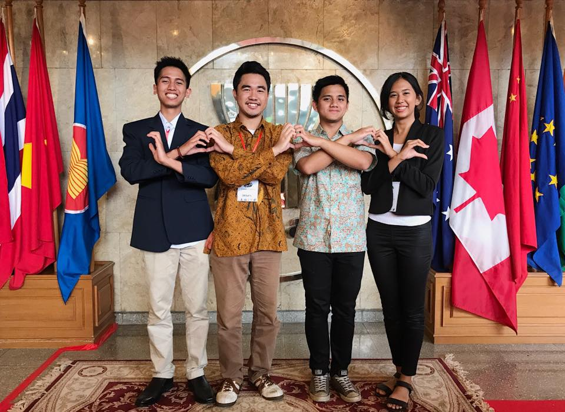
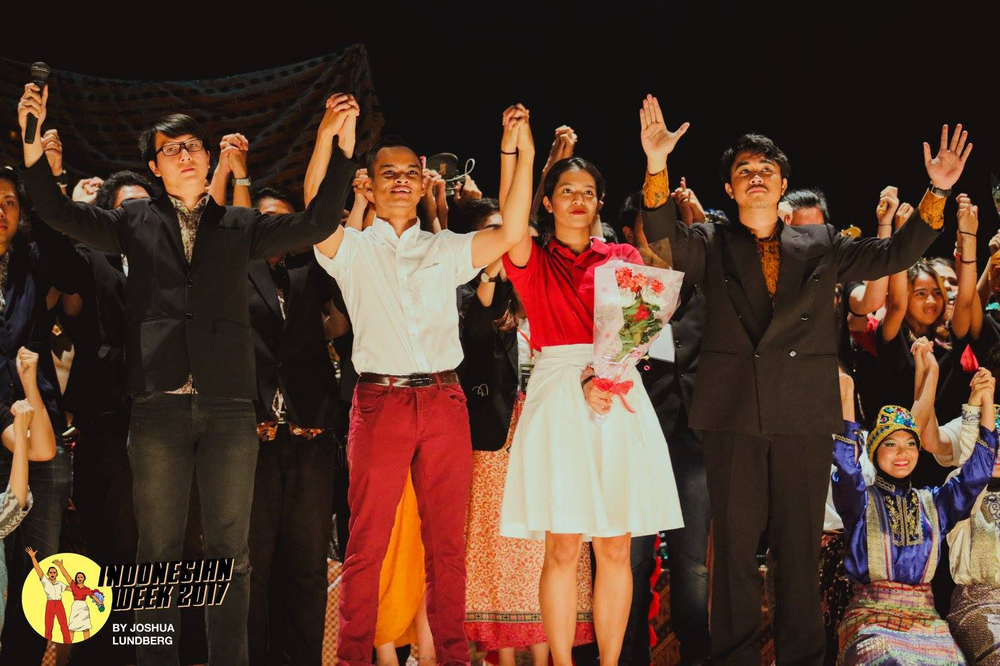

About Me
Let me tell you a little about myself and what I do...
Your Project Is In Safe Hands
Hi there! My name is Ananta, I came from Indonesia and currently I'm a final year student at
Ritsumeikan Asia Pacific University (APU) in Beppu, Oita prefecture, Japan. In my university I'm majoring
in Environment and Sustainable Development Studies. Between year 2015-2018 I've been actively involved in creating various social projects and volunteer teaching camp in Japan, Indonesia, and Thailand with my organization Connext ASEAN. In each of our projects we aim to bring quality education to hundreds of high school students, and particularly in Indonesia we've successfully raised 400.000 Yen of funding to support children education through our partner in Yogyakarta.
In my final year of study I realize that we could have created more positive impact if our organization have stronger presence in the web. So, I began my self-taught journey in web development, UI/UX design, data science, and so far I'm enjoying it so much! More than just being a web developer, I aim to use my knowledge to make a positive difference by creating product and service which will make people's live easier. Thus, by combining my knowledge and expertise in projects management with skills in web development and data science, I'm looking forward to contribute to the success of your projects!
Leader of Connext ASEAN APU
We are a multicultural community built around innovation and creative social projects. In just three years,our social projects ranging from on-campus activities, local exchanges, conferences, and youth development camps have made lasting and positive impacts on 140 staffs, 1500 students, and 24 schools in Asia especially Indonesia, Thailand, Vietnam, Nepal, and Japan.
Deputy Representative: Indonesian Week 2017
Indonesian Week is an Indonesian art and cultural event in Ritsumeikan Asia Pacific University (APU), Japan that lasts for a week. Beginning in 2002, in its early years Indonesian Week was aimed to promote Indonesian language class by hosting a musical and drama show. As the time goes by, since its commencement Indonesian Week has become the biggest Indonesian art and cultural event in Japan which has involved more than 30,000 participants and spectator from Indonesian and international community who came from 80 different countries and nationality in Ritsumeikan APU.
UN SDGs 15: Action Plan Executor

Merit360 is the worlds most significant program for young people to tackle the United Nations Sustainable Development Goals. As part of World Merit’s partnership with the United Nations, these action plans has been presented to the United Nations at its headquarters in New York City with the objective of paving our way to successfully addressing these challenges before or by 2030. I am part of writing and implementing Action Plan 001 for SDG15: Life on Land.